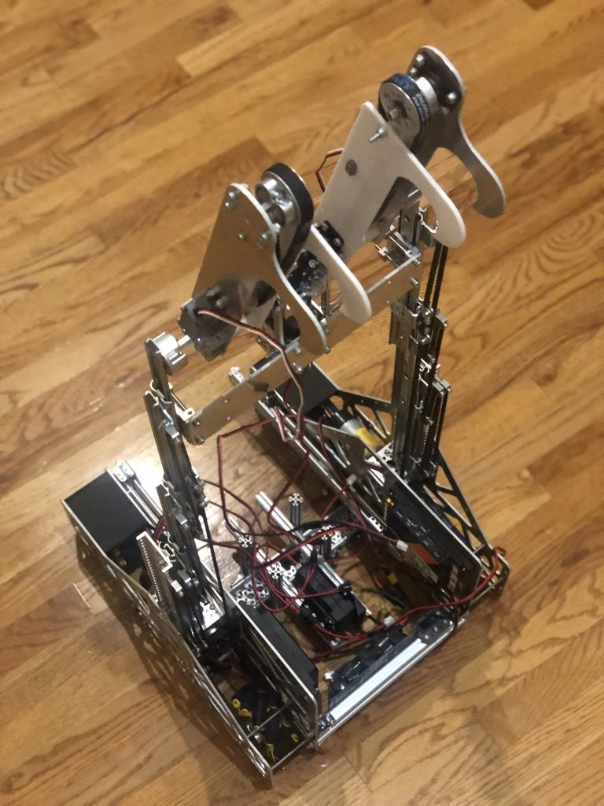

Robotics / 2023–2026
FTC robotics team lead
- Sole club leader: recruiting, team organization, fundraising, and direction of design, build, programming, and competition.
- Modeled the complete robot chassis from scratch in Fusion 360 using goBILDA components — a formal CAD phase the team had never had before.
- Closed the equipment funding gap with a crowdfunding push and a team bake sale.
- Wrote robot control code in Java.
Recruiting ~80 of 600 students
Raised ~$600
Years leading 3